Color
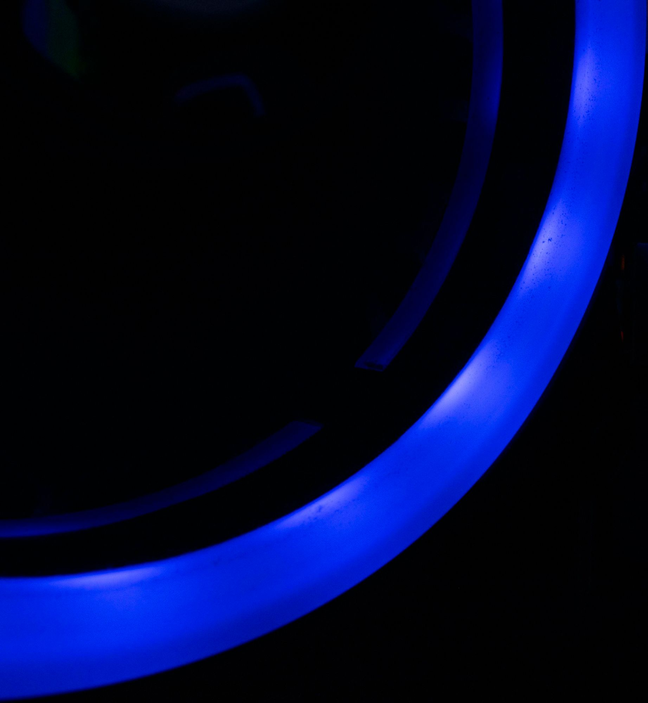
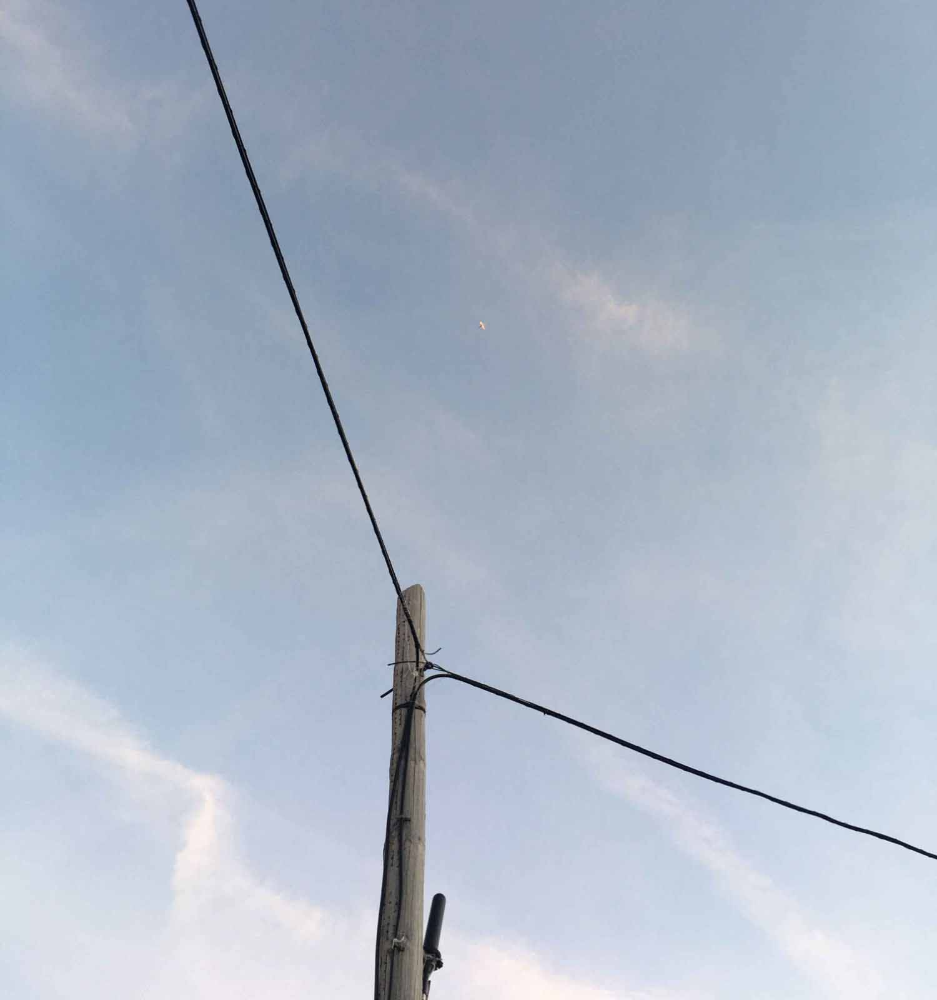
 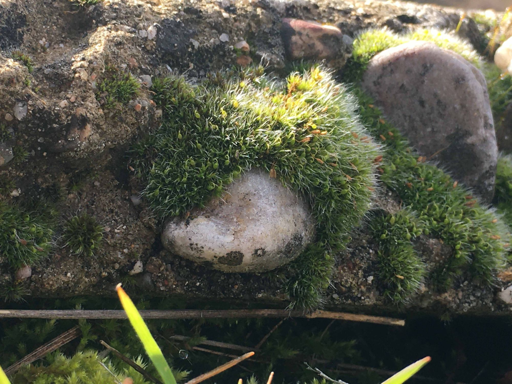
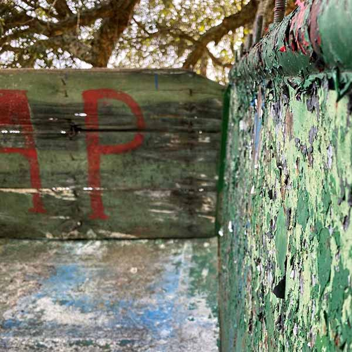
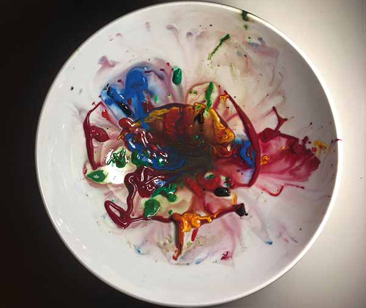
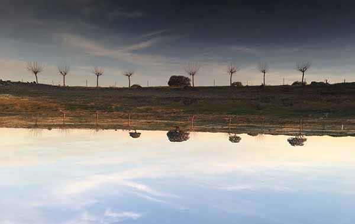
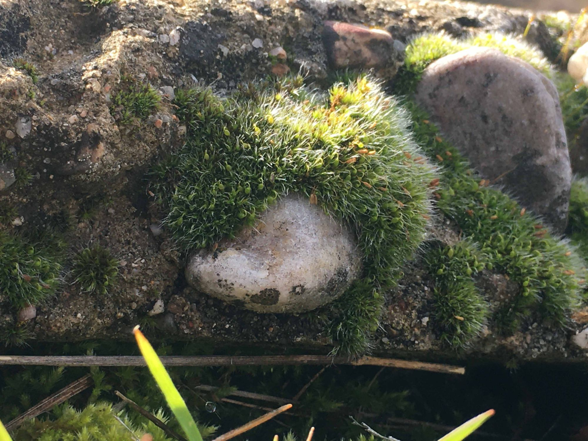
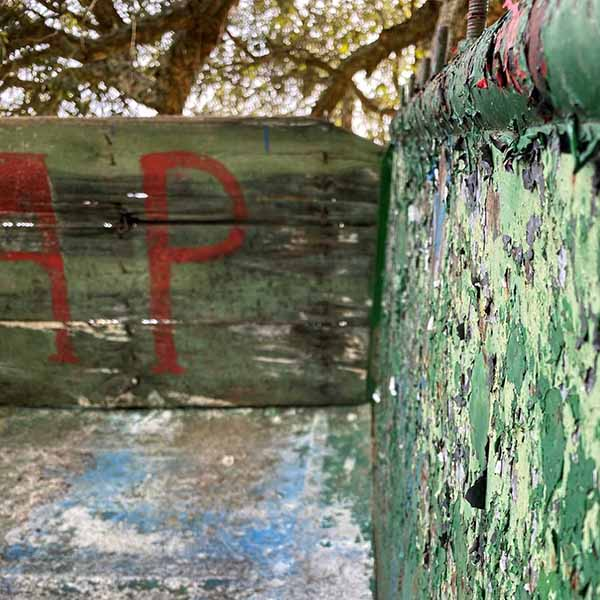
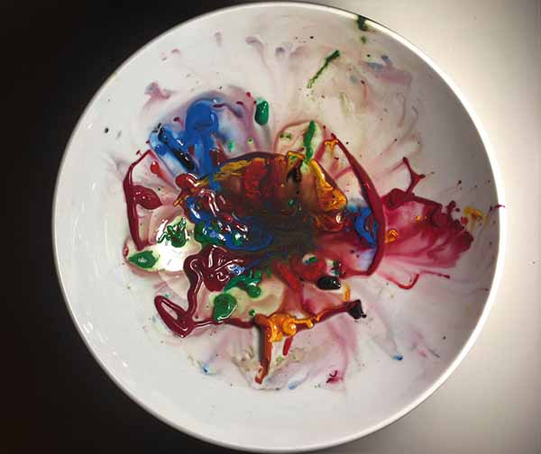
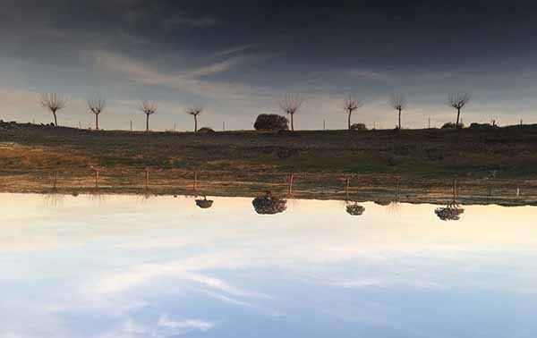
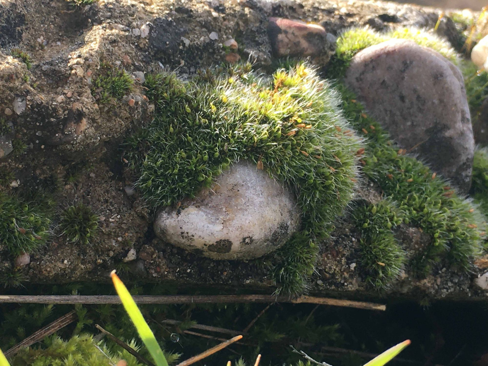
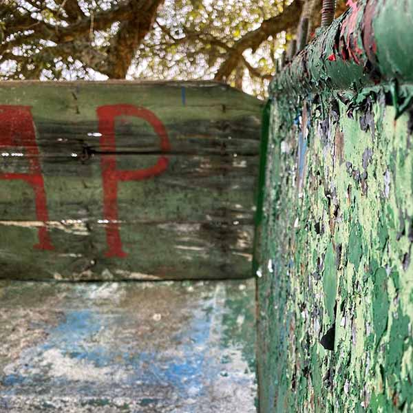
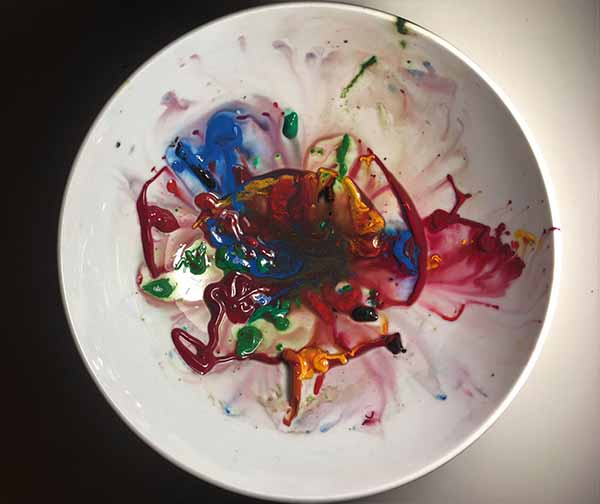
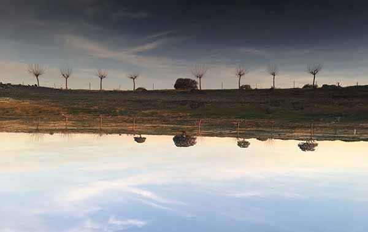
Información del proyecto
- Categoría: Recopilación de imagenes en color
- Lugar: Varios
- Autor: Cristina Carrillo
Estas imágenes están realizadas para la asignatura de Construcción de la mirada Fotográfica, cada semana se basaba en sacar imágenes sobre un tema en particular. Estos son la mirada a la naturaleza, a los objetos, a las palabras, a los elementos callejeros… Se trataba de sacar imágenes que tuvieran alma, que expresasen en el espectador algo más allá de la propia fotografía. Cada foto es única y simboliza una cosa en concreto, pero que público pudiera tener sensaciones diferentes, generando en él todo tipo de efecto.